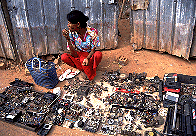

追記と謝辞とリンク
とにかく楽しい国だった。
人は親切、寺は全部珍寺。夢のようなところである。
ミャンマーでパゴダを見ていると「何故日本にはコレがないんだ」という思いで一杯になる。
特に参拝客を楽しませるアトラクションは我が国の寺院でも導入を検討して戴きたいものである。
今回は比較的行きやすいコースを選んだが、他にも珍寺はごまんとあるようだ。
特に本文中にも記したが南部のムドンという街に6月にオープンする世界最大の寝釈迦像は要チェックと見た。
また、行かねば。
 ←誰が買うんだ〜；ヤンゴンにて
謝辞＆ミャンマー関連リンク
今回のミャンマー行きには様々な方々のサポート、助言を頂きました。
特に後藤
修身さん、謙東弥さんには詳しいアドバイスを頂き、大変感謝しております。
ありがとうございました。
無事、かえってきました。
後藤 修身さんのエーヤワーディのほとり
謙東弥さんのビルマへの手紙
以下の主宰者の方々にも貴重なアドバイスをいただきました。ありがとうございました。
超天然ビルマ仏SHOW
アジアの黄昏
今回の旅行でお世話になったツアー会社。
どちらも優秀なスタッフでした。
SanayTravelのホームページ
TOUR
MANDALAY のホームページ
ミャンマーパゴダ列伝のページへ戻る
珍寺大道場 HOME